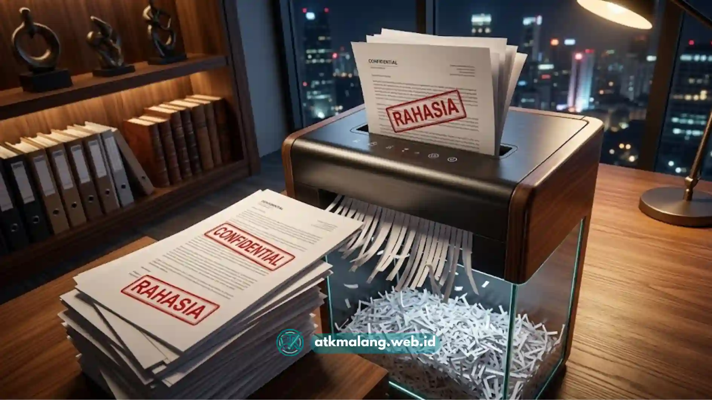

Setiap kantor, besar maupun kecil, menyimpan dokumen yang berisi informasi sensitif mulai dari data pelanggan, kontrak kerja sama, catatan keuangan, hingga dokumen kepegawaian.
Ketika dokumen semacam ini tidak lagi dibutuhkan, cara membuangnya tidak boleh sembarangan.
Membuang kertas begitu saja ke tempat sampah membuka celah bagi pihak yang tidak bertanggung jawab untuk mengakses informasi yang seharusnya rahasia.
Di sinilah peran mesin penghancur kertas menjadi krusial: alat ini memastikan dokumen benar-benar tidak dapat dibaca ulang atau disusun kembali setelah dihancurkan.
Daftar Isi
- Apa Itu Mesin Penghancur Kertas dan Bagaimana Cara Kerjanya
- Mengapa Keamanan Dokumen Menjadi Perhatian Utama Kantor
- Apa Saja Manfaat Menggunakan Mesin Penghancur Kertas di Kantor
- Kapan Sebaiknya Dokumen Dihancurkan
- Kesalahan Umum dalam Pengelolaan Dokumen Rahasia
- Tips Memaksimalkan Penggunaan Mesin Penghancur Kertas
Apa Itu Mesin Penghancur Kertas dan Bagaimana Cara Kerjanya
Mesin penghancur kertas, atau paper shredder, adalah perangkat yang dirancang untuk memotong kertas menjadi potongan-potongan kecil sehingga isi dokumen tidak dapat dikenali lagi.
Secara umum ada dua jenis pemotongan yang banyak digunakan di kantor, strip-cut, yang memotong kertas menjadi lembaran memanjang, dan cross-cut atau micro-cut, yang memotong kertas menjadi potongan kecil menyerupai confetti.
Semakin halus hasil potongan, semakin sulit dokumen tersebut disusun ulang, sehingga tingkat keamanannya pun semakin tinggi.
Proses kerjanya cukup sederhana: kertas dimasukkan ke celah mesin, lalu pisau berputar di dalamnya akan memotong kertas secara otomatis.
Sebagian besar mesin modern juga dilengkapi sensor untuk mendeteksi kertas macet, mencegah panas berlebih, dan mematikan mesin secara otomatis saat kapasitas penampung sudah penuh.
Mengapa Keamanan Dokumen Menjadi Perhatian Utama Kantor
Kebocoran data bukan hanya berdampak pada kerugian finansial, tetapi juga dapat merusak reputasi dan kepercayaan pelanggan terhadap perusahaan.
Dokumen fisik yang dibuang tanpa dihancurkan sering menjadi sasaran empuk praktik yang dikenal sebagai "dumpster diving", yaitu mencari informasi berharga dari tumpukan sampah kertas.
Risiko ini berlaku untuk berbagai jenis usaha, mulai dari kantor hukum, klinik, lembaga keuangan, hingga usaha kecil menengah yang menyimpan data pelanggan.
Selain risiko dari pihak luar, penghancuran dokumen juga penting untuk menjaga kerapian arsip internal.
Dokumen kedaluwarsa yang menumpuk tanpa pengelolaan yang jelas dapat menyulitkan proses audit dan membuat kantor terlihat tidak profesional.
Apa Saja Manfaat Menggunakan Mesin Penghancur Kertas di Kantor
Manfaat utama penggunaan mesin penghancur kertas antara lain:
- Melindungi data sensitif perusahaan dan pelanggan dari akses pihak yang tidak berwenang
- Membantu kepatuhan terhadap kebijakan internal perusahaan terkait pengelolaan dokumen
- Merapikan ruang kerja dengan mengurangi penumpukan arsip lama yang sudah tidak diperlukan
- Memberikan rasa aman bagi karyawan dan manajemen dalam mengelola informasi rahasia
- Mendukung proses daur ulang, karena kertas yang telah dihancurkan tetap dapat didaur ulang melalui pengelola limbah kertas

Proses penghancuran dokumen rahasia dengan potongan cross-cut untuk keamanan ekstra.Kapan Sebaiknya Dokumen Dihancurkan
Tidak semua dokumen perlu segera dihancurkan begitu selesai digunakan.
Sebagai panduan umum, dokumen sebaiknya disimpan selama periode tertentu sesuai kebutuhan operasional atau ketentuan internal perusahaan, baru kemudian dihancurkan setelah masa penyimpanan tersebut berakhir dan dokumen dipastikan tidak lagi dibutuhkan untuk keperluan apa pun.
Dokumen yang umum dihancurkan meliputi salinan invoice lama, formulir yang sudah tidak berlaku, draf kontrak yang telah direvisi, serta catatan internal yang bersifat sementara.
Sebaliknya, dokumen legal, arsip pajak, atau dokumen yang masih memiliki nilai hukum sebaiknya disimpan sesuai jangka waktu yang berlaku sebelum akhirnya dipertimbangkan untuk dihancurkan.
Kesalahan Umum dalam Pengelolaan Dokumen Rahasia
Beberapa kesalahan yang sering terjadi di kantor terkait pengelolaan dokumen antara lain membuang dokumen penting bersama sampah biasa tanpa dihancurkan terlebih dahulu.
Selain itu, menggunakan mesin penghancur kertas dengan kapasitas yang tidak sesuai sehingga sering macet, serta tidak memiliki kebijakan tertulis mengenai kapan dan bagaimana dokumen harus dimusnahkan.
Kesalahan lain adalah menumpuk dokumen yang akan dihancurkan dalam waktu lama tanpa pengawasan, sehingga berisiko hilang atau diakses pihak yang tidak berkepentingan sebelum sempat dimusnahkan.
Tips Memaksimalkan Penggunaan Mesin Penghancur Kertas
Agar mesin penghancur kertas bekerja optimal dan tahan lama, sebaiknya perhatikan kapasitas lembar per proses sesuai spesifikasi alat.
Hindari memasukkan benda selain kertas seperti klip logam dalam jumlah banyak, kosongkan wadah penampung secara berkala agar mesin tidak macet, serta lakukan perawatan rutin seperti pelumasan pisau sesuai anjuran pabrik.
Menentukan jadwal rutin untuk menghancurkan dokumen, misalnya mingguan atau bulanan, juga membantu mencegah penumpukan arsip yang tidak terkelola.
Mesin penghancur kertas bukan sekadar alat pelengkap kantor, melainkan bagian penting dari strategi keamanan data perusahaan.
Dengan memahami cara kerja, manfaat, dan cara penggunaannya yang tepat, perusahaan dapat mengurangi risiko kebocoran informasi sekaligus menjaga kerapian pengelolaan arsip.
Untuk kantor di Malang yang ingin memilih atau membeli mesin penghancur kertas yang sesuai kebutuhan, Anda bisa langsung berbelanja Alat Tulis Kantor di toko yang tepat.
Atau bisa mencari informasi pembelian mesin penghancur kertas bergaransi resmi yang sesuai dengan volume dokumen di kantor Anda di ATK Malang.